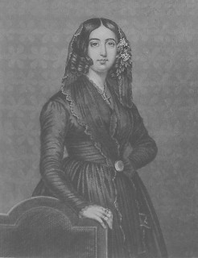

Um 1800 trugen Frauen sehr aufwändige Kleider mit viel schwerem Stoff. Frauen aus niedrigen Ständen durften nicht verreisen, was es ihnen zum Problem machte, die Welt zu erkunden. Im 19. Jahrhundert entstanden weitere Bestrebungen zur Frauenemanzipation, einige Frauen versuchten Schriftstellerinnen zu werden. Bücher zu veröffentlichen, war allerdings mitunter recht schwierig für Frauen.
Von Jule Kämmerling